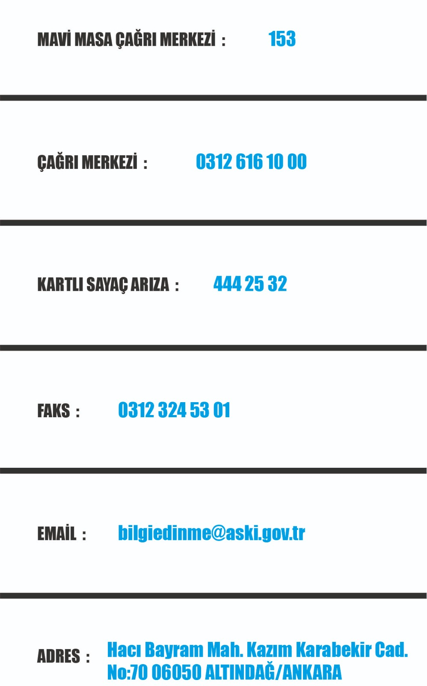

<ion-header>
  <ion-toolbar color="secondary">
    <ion-buttons >
      <ion-back-button text="Geri"  defaultHref="/home"></ion-back-button>
    </ion-buttons>
    <ion-title>İletişim</ion-title>
  </ion-toolbar>
 </ion-header>

<ion-content>

  

</ion-content>
